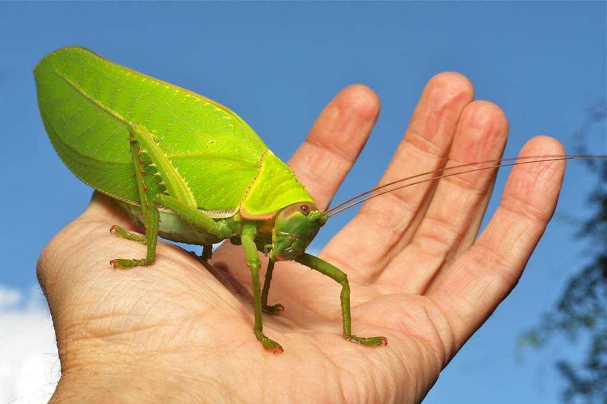

Le Pseudophyllus titan est une grande sauterelle verte appartenant à
la famille des Tettigoniidae.
Elle se reconnaît facilement grâce à ses ailes qui ressemblent à des
feuilles,
ce qui lui permet de se camoufler dans la végétation.
Cette espèce vit principalement dans les régions tropicales d'Asie
et est surtout active la nuit.
Elle se nourrit principalement de végétaux et utilise son camouflage
pour se protéger des prédateurs.
Pseudophyllus titan est également connu pour son chant.
Seul le mâle produit ce son, principalement pendant la nuit.
Il émet un son aigu et régulier, assez particulier pour une
sauterelle, qui sert notamment à communiquer avec les autres
individus.